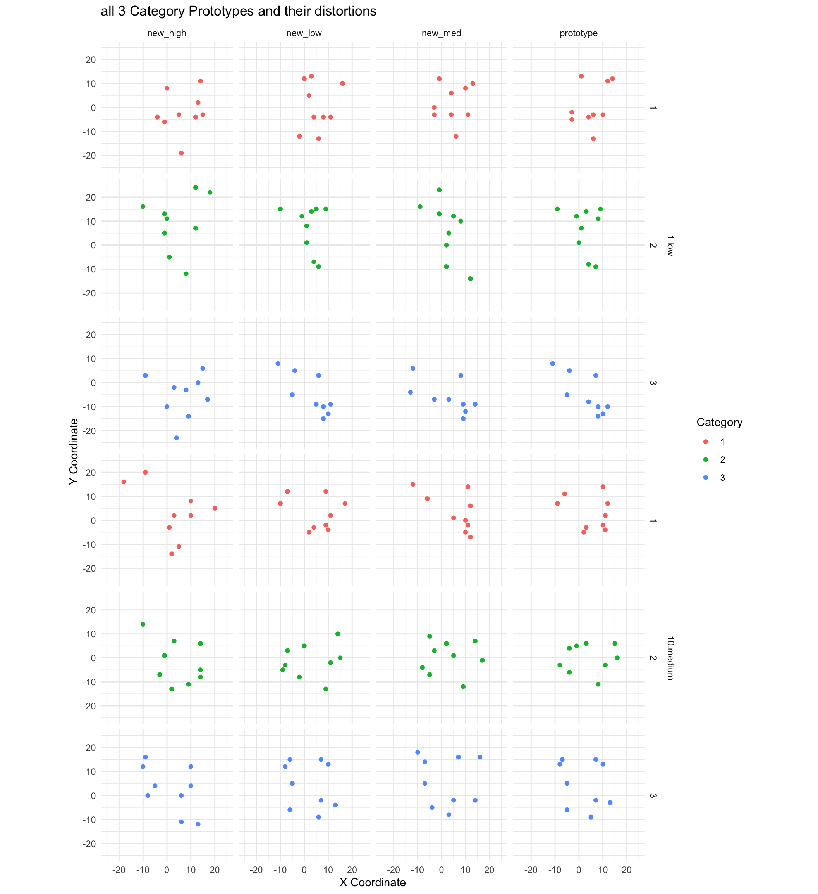
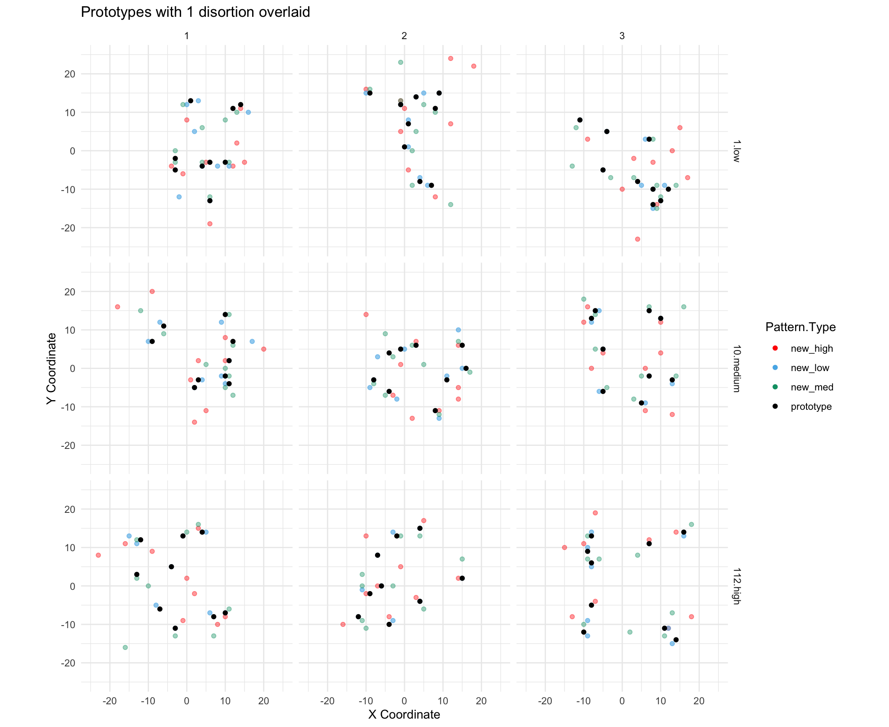
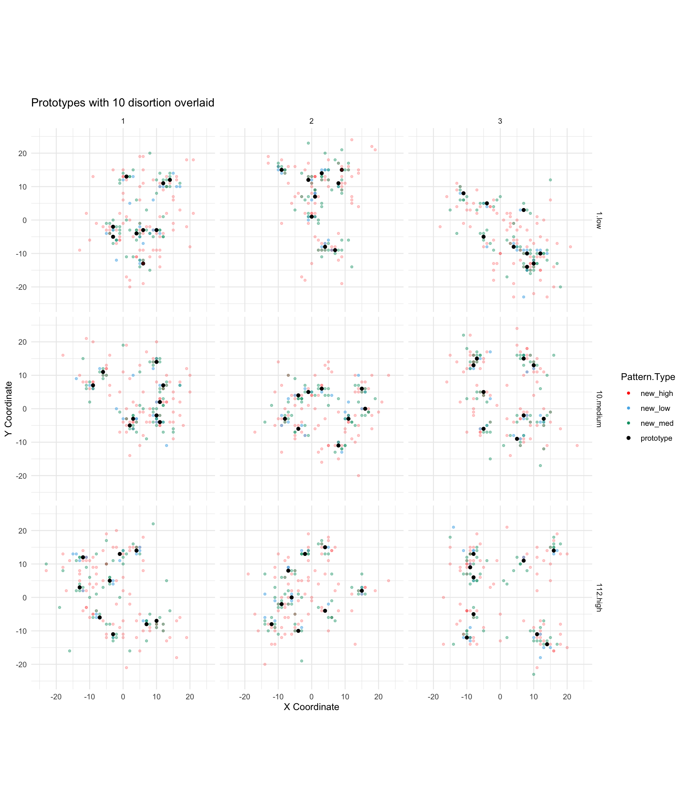
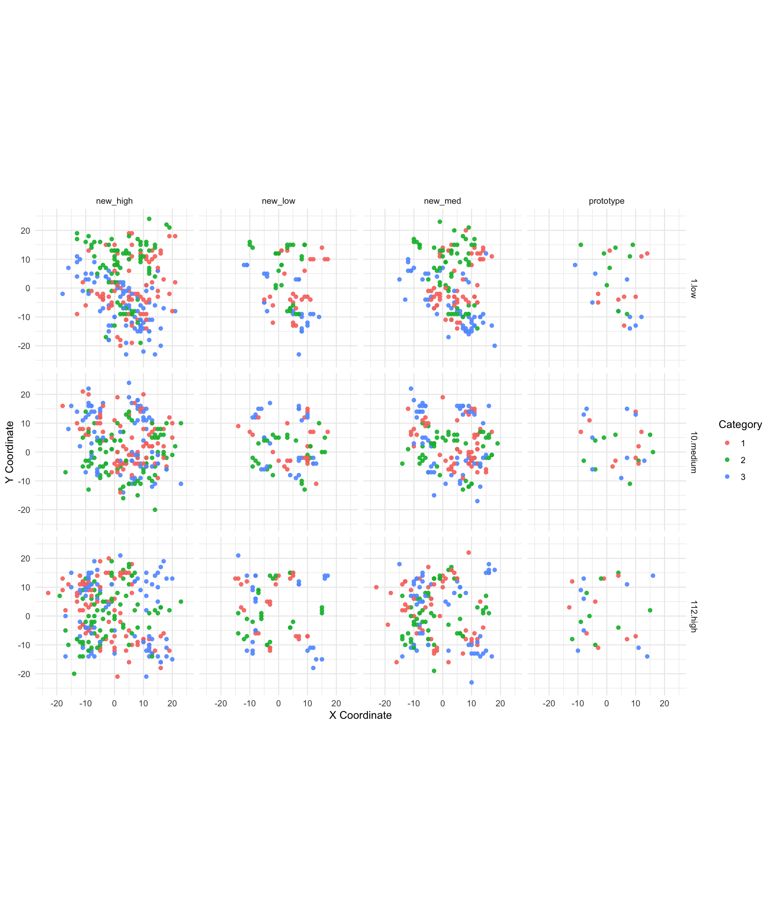
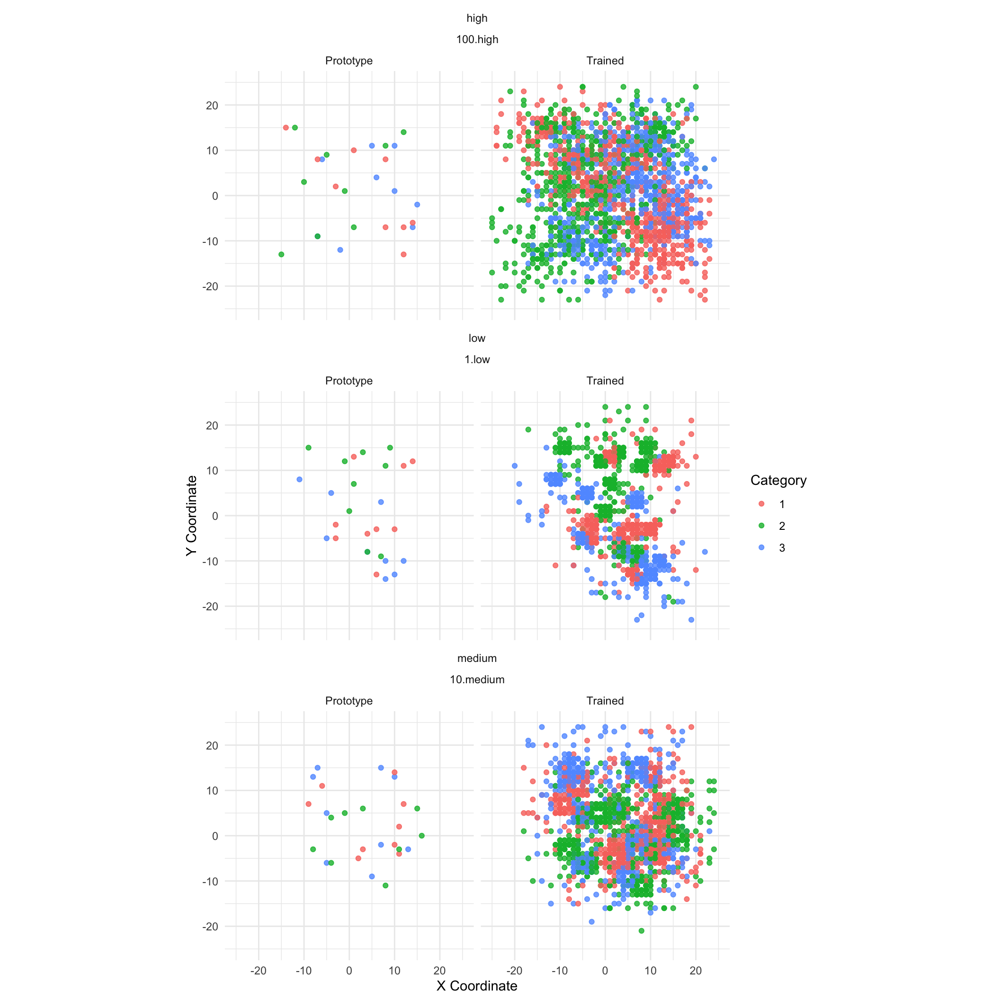

pacman::p_load(dplyr,purrr,tidyr,ggplot2, data.table,readr,here, patchwork, conflicted)conflict_prefer_all("dplyr", quiet =TRUE)lmc22<-readRDS(here("data","lmc22.rds"))mc24<-readRDS(here("data","mc24.rds"))mc24_patterns<-mc24|>ungroup()|>rename(Pattern.Type="Pattern_Token")|>mutate(Pattern.Type=forcats::fct_relevel(Pattern.Type,"prototype","old","new_low","new_med","new_high"))|>select(id,sbjCode,condit,exp,file,Phase,trial,Block,Pattern.Type,Category,Response,Corr,x1:y9)|>arrange(sbjCode,condit,Category)lmc22_patterns<-lmc22|>ungroup()|>mutate(Pattern.Type =as.character(Pattern.Type))|># Convert to character firstmutate(Pattern.Type =factor(case_match(Pattern.Type,"Trained.Med"~"old","Prototype"~"prototype","New.Low"~"new_low","New.Med"~"new_med","New.High"~"new_high", .default =Pattern.Type), # Include a default case levels =c("prototype", "old", "new_low", "new_med", "new_high")))|>select(id,sbjCode,condit,exp,file,Phase,trial,Block,Pattern.Type,Category,Response,Corr,x1:y9)|>arrange(sbjCode,condit,Category)mc24_prototypes<-mc24_patterns|>filter(Pattern.Type=="prototype")|>select(sbjCode,condit,exp,file,Category,x1:y9)lmc22_prototypes<-lmc22_patterns|>filter(Pattern.Type=="prototype")|>select(sbjCode,condit,exp,file,Category,x1:y9)ids<-unique(mc24_patterns$id)pat_themes<-list(theme_minimal(),xlim(-25, 25),ylim(-25, 25),labs(x ="X Coordinate", y ="Y Coordinate"),coord_fixed(),guides(alpha =FALSE))
Pattern Visuals
Code
# mc24_prototypes_long <- mc24_patterns |> # filter(Pattern.Type=="prototype") |># gather(key = "coordinate", value = "value", -id, -condit, -exp, -file, -Category) %>%# separate(coordinate, into = c("axis", "number"), sep = 1) %>%# spread(key = axis, value = value) %>%# mutate(number = as.integer(number))# mc24_prototypes_long |># filter(id %in% c("1.low","10.medium","112.high")) |># ggplot(aes(x = x, y = y)) +# geom_point() + # Add dots# facet_grid(id ~ Category) + # Create a grid of plots, with subjects by rows and categories by columns# pat_themes
Code
pat_long<-mc24_patterns|>filter(Phase==2)|>select(id, condit, Category, Pattern.Type, x1:y9)|>group_by(id, condit, Category, Pattern.Type)|>slice_head(n=1)|>gather(key ="coordinate", value ="value", -id, -condit, -Category,-Pattern.Type)%>%separate(coordinate, into =c("axis", "number"), sep =1)%>%spread(key =axis, value =value)%>%mutate(number =as.integer(number))pat_long|>filter(Category==1, id%in%c("1.low","10.medium","112.high"),Pattern.Type!="old")|>ggplot(aes(x =x, y =y,col=Pattern.Type))+geom_point()+# Add dotsggh4x::facet_grid2(id~Pattern.Type, margins=c("Pattern.Type"))+# Create a grid of plots, with subjects by rows and categories by columnspat_themes+labs(title="Prototypes from Category 1 - with distortions")
Prototypes and their distortions
Code
pat_long|>mutate(Category =as.factor(Category))|>filter(id%in%c("1.low","10.medium"),Pattern.Type!="old")|>ggplot(aes(x =x, y =y,col=Category))+geom_point()+# Add dots#ggh4x::facet_nested_wrap(id~Category~Pattern.Type) + #ggh4x::facet_grid2(id ~ Category ~ Pattern.Type) +ggh4x::facet_nested(~id+Category~Pattern.Type)+pat_themes+labs(title="all 3 Category Prototypes and their distortions")

all 3 Category Prototypes and their distortions
Code
pat_long|>filter(id%in%c("1.low","10.medium","112.high"),Pattern.Type!="old")|>ggplot(aes(x =x, y =y))+geom_point(aes(color =Pattern.Type, alpha =Pattern.Type))+scale_color_manual(values =c("prototype"="black", # Black for prototype"old"="#E69F00", # Orange for old"new_low"="#56B4E9", # Blue for new_low"new_med"="#009E73", # Green for new_med"new_high"="red"))+# Yellow for new_high scale_alpha_manual(values = c("prototype" = 1, "old" = 0.5, "new_low" = 0.5, "new_med" = 0.5, "new_high" = 0.5)) +scale_alpha_manual(values =c("prototype"=1, "old"=0.2, "new_low"=0.6, "new_med"=0.4, "new_high"=0.4))+facet_grid(id~Category)+pat_themes+labs(title="Prototypes with 1 disortion overlaid")

Prototypes with 1 disortion overlaid
Code
pat_long<-mc24_patterns|>filter(Phase==2)|>select(id, condit,trial, Category, Pattern.Type, x1:y9)|>group_by(id, condit, Category, Pattern.Type)|>slice_head(n=10)|>gather(key ="coordinate", value ="value", -id, -condit,-trial, -Category,-Pattern.Type)%>%separate(coordinate, into =c("axis", "number"), sep =1)%>%spread(key =axis, value =value)%>%mutate(number =as.integer(number))pat_long|>filter(id%in%c("1.low","10.medium","112.high"),Pattern.Type!="old")|>ggplot(aes(x =x, y =y))+geom_point(aes(color =Pattern.Type, alpha =Pattern.Type, size=Pattern.Type))+scale_color_manual(values =c("prototype"="black", # Black for prototype"old"="#E69F00", # Orange for old"new_low"="#56B4E9", # Blue for new_low"new_med"="#009E73", # Green for new_med"new_high"="red"))+# Yellow for new_high scale_alpha_manual(values = c("prototype" = 1, "old" = 0.5, "new_low" = 0.5, "new_med" = 0.5, "new_high" = 0.5)) +scale_alpha_manual(values =c("prototype"=4, "new_low"=0.5, "new_med"=0.4, "new_high"=0.2))+scale_size_manual(values =c("prototype"=1.5, "new_low"=1, "new_med"=1, "new_high"=1))+facet_grid(id~Category)+pat_themes+labs(title="Prototypes with 10 disortion overlaid")

Prototypes with 10 disortion overlaid
Code
pat_long|>mutate(Category=as.factor(Category))|>filter(id%in%c("1.low","10.medium","112.high"),Pattern.Type!="old")|>ggplot(aes(x =x, y =y))+geom_point(aes(color =Category),alpha=.9)+facet_grid(id~Pattern.Type)+pat_themes

Prototype separability
Code
pat_long_train<-mc24_patterns|>mutate(Category=as.factor(Category))|>filter(id%in%ids[1:16])|>filter(Phase==1)|>select(id, condit,trial, Category, Pattern.Type, x1:y9)|>group_by(id, condit, Category, Pattern.Type)|>gather(key ="coordinate", value ="value", -id, -condit,-trial, -Category,-Pattern.Type)%>%separate(coordinate, into =c("axis", "number"), sep =1)%>%spread(key =axis, value =value)%>%mutate(number =as.integer(number))pat_long_train|>ggplot(aes(x =x, y =y))+geom_point(aes(color =Category),alpha=.7)+facet_wrap(~condit+id,ncol=4)+pat_themes
Training exemplar separability - 10 subjects
Code
pat_long_train<-mc24_patterns|>mutate(Category=as.factor(Category))|>filter(id%in%ids[1:3])|>filter(Phase==1|Pattern.Type=="prototype")|>select(id, condit,trial, Category, Pattern.Type,Phase, x1:y9)|>group_by(id, condit, Category, Pattern.Type,Phase)|>gather(key ="coordinate", value ="value", -id, -condit,-trial, -Category,-Pattern.Type,-Phase)%>%separate(coordinate, into =c("axis", "number"), sep =1)%>%spread(key =axis, value =value)%>%mutate(number =as.integer(number), itemType=case_match(Phase,1~"Trained",2~"Prototype"))pat_long_train|>ggplot(aes(x =x, y =y))+geom_point(aes(color =Category),alpha=.8)+ggh4x::facet_nested_wrap(~condit+id+itemType,ncol=2)+pat_themes

Training exemplar separability compared to prototypes
Code
pat_long|>ungroup()|>filter(id%in%ids[1:5]&Pattern.Type=="prototype")|>droplevels()|>mutate(Category=as.factor(Category))|>ggplot(aes(x =x, y =y))+geom_point(aes(color=id),alpha=.9)+facet_grid(id~Category)+pat_themes+labs(title="Prototypes from first 5 subjects - should match first 10 task trials")
Prototypes from first 5 subjects - should match first 10 task trials